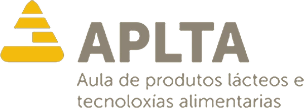

Técnica de laboratorio en prácticas
Aula de Produtos Lácteos e Tecnoloxías Alimentarias (APLTA)
Prácticas de apoyo en el laboratorio de un centro dedicado a la leche y los productos lácteos: preparación de muestras para el equipo especialista, colaboración con el departamento de calidad y mantenimiento del material y de las condiciones de higiene y seguridad.
Funciones
- Muestras
-
- Preparación de muestras para su análisis por el equipo especialista.
- Colaboración con el departamento de calidad en la toma de muestras y el análisis de datos.
- Equipos
-
- Mantenimiento y cuidado de instrumentos y equipos de laboratorio, atendiendo a su instalación y calibrado.
- Higiene
-
- Desinfección de superficies de trabajo y esterilización del instrumental.
- Seguridad
-
- Cumplimiento de las normas de seguridad industrial y uso adecuado de los equipos de protección individual (EPI).
- Seguimiento de los procedimientos de trabajo y de las prácticas de higiene del laboratorio.